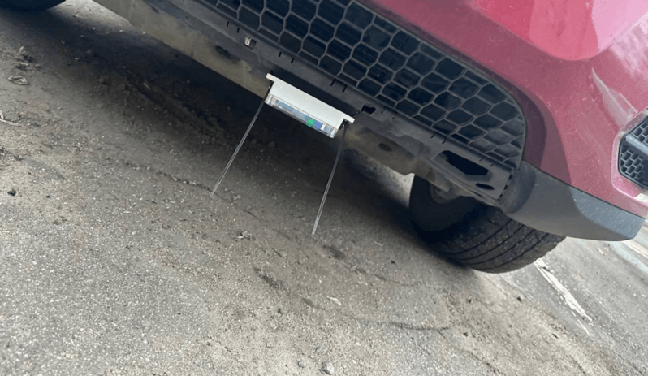

This article continues our series on V2M technology. The previous article covered the V2M-One device; this one focuses on the software.
2023–2024
Our first device and proof of concept
We built the first version of our sound acquisition system on a FireFly Rockchip microcomputer and made two units. The microcomputer ran Ubuntu and used an NVMe SSD for storage. It had modern interfaces, GPS, Wi-Fi, and cellular connectivity, and it sent the collected audio to our server over the internet. It could record from up to eight microphones at once over the PDM interface. The system was powered by the car’s battery, started with the ignition, and read the vehicle’s speed from the CAN bus.
We designed a sensor block with two PDM microphones facing in opposite directions for spatial recognition. The device supported up to four sensor blocks (eight microphones). We ended up using two blocks, mounted at the front and rear of the vehicle.

We first installed the system on one electric vehicle (EV) and one internal combustion engine (ICE) car to collect data from both vehicle types. We recorded malfunction sounds such as hums, knocks, and whistles in different weather, at different speeds, and on different terrain. We recorded each fault before and after the faulty part was repaired, to capture exactly how the sound changed.
Before training, we labeled the recordings manually. We used technicians’ diagnoses to match each sound signature to a vehicle state and fault type. The model started from weights pretrained on AudioSet dataset, which gave it general-purpose acoustic features; then we used our dataset to train and test our own neural network models. Its input was log-mel spectrograms extracted from 10-second PCM audio segments sampled at 22 kHz.
To run efficiently on the device, the architecture was designed as a lightweight convolutional neural network (CNN) optimized for edge hardware. Inference ran directly on the Neural Processing Unit (NPU) of the FireFly Rockchip board in the vehicle. The model was compiled and accelerated with the RKNN SDK.
Blind testing
To keep the evaluation objective, we ran the final verification as a blind test under real driving conditions. We deployed the models for continuous monitoring on a vehicle built on the same platform as the one used for data collection and training: the same suspension, powertrain, electronics, and drivetrain. To mirror real-world repairs, technicians replaced the faulty component with a working one on an undisclosed day. That repair fixed the very fault the model had been trained to detect. The software engineers were not told when the repair took place.
Running in the background, the model picked up the change: after the component was replaced, the share of segments classified as faulty dropped sharply. In other words, the system tracked the vehicle’s transition from a fault state back to normal operation. This result validated the proof of concept (PoC), demonstrating that the models can operate in real-world conditions and the diagnostic algorithms can be applied across different vehicle models that share the same platform.
Day-by-day results from two blind tests:
| Date | Actual Condition | Recognized as Fault state, times | Recognized as Normal, times | Fault state Recognition, % |
|---|---|---|---|---|
| 1-Aug-2023 | Fault state | 286 | 5 | 98.28% |
| 2-Aug-2023 | Fault state | 407 | 15 | 96.45% |
| 3-Aug-2023 | Fault state | 227 | 37 | 85.98% |
| 4-Aug-2023 | Fault state | 246 | 24 | 91.11% |
| 5-Aug-2023 | Fault state | 514 | 34 | 93.80% |
| 6-Aug-2023 | Fault state | 447 | 37 | 92.36% |
| 7-Aug-2023 | Fault state | 134 | 25 | 84.28% |
| 9-Aug-2023 | Normal | 5 | 292 | 1.68% |
| 10-Aug-2023 | Normal | 14 | 155 | 8.28% |
| 11-Aug-2023 | Normal | 18 | 268 | 6.29% |
| 12-Aug-2023 | Normal | 110 | 119 | 48.03% |
| 13-Aug-2023 | Normal | 8 | 96 | 7.69% |
| 14-Aug-2023 | Normal | 28 | 149 | 15.82% |
| Date | Actual Condition | Recognized as Fault state, times | Recognized as Normal, times | Fault state Recognition, % |
|---|---|---|---|---|
| 12-Sep-2023 | Fault state | 452 | 2 | 99.56% |
| 13-Sep-2023 | Fault state | 287 | 1 | 99.65% |
| 14-Sep-2023 | Fault state | 405 | 1 | 99.75% |
| 15-Sep-2023 | Fault state | 105 | 3 | 97.22% |
| 17-Sep-2023 | Fault state | 122 | 2 | 98.39% |
| 18-Sep-2023 | Normal | 0 | 174 | 0.00% |
| 19-Sep-2023 | Normal | 1 | 445 | 0.22% |
| 5-Oct-2023 | Normal | 0 | 154 | 0.00% |
| 6-Oct-2023 | Normal | 0 | 728 | 0.00% |
| 7-Oct-2023 | Normal | 0 | 156 | 0.00% |
| 10-Oct-2023 | Normal | 0 | 256 | 0.00% |
| 11-Oct-2023 | Normal | 0 | 122 | 0.00% |
| 21-Oct-2023 | Normal | 1 | 191 | 0.52% |
| 22-Oct-2023 | Normal | 1 | 119 | 0.83% |
| 25-Oct-2023 | Normal | 12 | 416 | 2.80% |
From the first device to miniature system
Using what we had learned and our refined requirements, we developed a miniature system. The goal was to make the computing unit much smaller and cheaper, while still running the models on the device without losing accuracy. The new compact device was built on the Lichee RV platform running Debian OS. Despite its low cost and small size, it had enough processing power to run the trained neural networks on the vehicle without performance degradation.
Mid-2024 – 2025
Experiments with anomaly detection
After the proof of concept, we explored anomaly detection to see if we could achieve the same performance without using labeled fault data. We had two goals: first, to flag any sound that deviates from the norm as an anomaly, and to remove the need for data labeling altogether.
We tested reconstruction methods, which are trained only on normal data. However, these approaches could not reach the quality we needed on our vehicle recordings, which led us back to a supervised learning approach. Ultimately, with a labeled dataset, the models can not only detect issues but also precisely identify the type and location of each defect.
Optimizing sensor deployment for larger scale testing
We expanded testing to more vehicles and a wider range of fault types. To do this, we moved removable sensors from vehicle to vehicle to collect more field recordings together with expert annotations. These tests used new Mango-based devices and did not yet involve a mobile app.
Although we already had sensors that potentially were much easier to install than before since they did not require any wires, the previous mounting method required a lifting device and took several tens of minutes - longer than the test itself, so we had to find a better way.
As data collection scaled up, we improved the installation process by trial and error. We tested many mounting locations: the engine compartment, bumper, windshield, cabin floor, and trunk.
Tests involving sensor mounting in the engine compartment demonstrated that the target acoustic signals were heavily masked by dominant engine noise. Attempts to suppress this high-frequency white noise using earplugs for isolation failed.
On the outside of the bumper, the microphones picked up mostly wind and background noise rather than mechanical signs of a malfunction.
The windshield was the easiest location to install, but there the microphones picked up conversations and cabin noise that drowned out the diagnostic signals.
The trunk and cabin floor were better isolated from powertrain and outside noise, but road noise dominated there. The diagnostic signals were audible, but not clear enough to distinguish specific features.
In the end, we found a compromise that allowed quick installation with acceptable acoustic signature: in internal combustion engine vehicles, the sensors were mounted closer to the center using clamps. In EVs, because of their underbody design, we install them in the front and rear luggage compartments.
Running inference on the server
At the same time, we moved inference to the server, which had three benefits:
- We no longer had to push updates to the devices after every training iteration.
- The device became even smaller and cheaper, because it only had to capture audio and send it to the server and did not require to support heavier computations.
- We were no longer limited in the models we could run, so we could use more powerful SOTA models.
We also introduced our first Android app to deliver the analysis results.
Fault labels and the grader
Based on our 15-years expertise in car maintenance we created a sound reference table which maps a type of the sound to its possible source, service action and a hazard level, making a total of 12 sound-and-source profiles. The profiles use 11 sound names and three hazard levels: Acceptable, Moderate, and Critical.
For example, a whistle from a belt or the brakes sits at Moderate. The same whistle from the turbocharger sits at Critical. A technician confirms the mechanical cause before starting the repair.
The hazard level drives decisions. A workshop uses it to choose which car to inspect first, so a Critical ride goes ahead of a Moderate one. A fleet operator uses it to pull a vehicle from the line. The owner report names the sound behind the recommendation, and technicians label sounds from this reference, so everyone shares the same vocabulary.
| Sound | Source in the car | Service action | Hazard |
|---|---|---|---|
| Hum | Hub bearings, rear axle, differentials | Replacement of hubs, repair or replacement of reduction gear/differentials | Moderate |
| Noise | General background | Aerodynamics, road noise, tires | Acceptable |
| Creak | Brake calipers, discs, pads; ball joints, bushings, control arms | Replacement of brake pads and discs, control arms, brake caliper repair | Moderate |
| Whistle | Belts, idlers, tensioners (for auxiliary equipment drive); brake calipers, discs, pads | Auxiliary equipment parts replacement, brake pad and disc replacement, brake caliper repair | Moderate |
| Whistle | Turbocharger | Repair or replacement of the turbocharger | Critical |
| Crunch | Axles (shafts, CV joints) | Replacement of axle shaft, resealing of splined joint | Critical |
| Crack | Axles (shafts, CV joints) | Replacement of axle shaft, resealing of splined joint | Critical |
| Clicks | Axles (shafts, CV joints) | Replacement of axle shaft, resealing of splined joint | Critical |
| Ring | Metal, exhaust | Weakened exhaust element, metallic resonance from aging materials | Acceptable |
| Knock | Shock absorbers, coil springs, knuckles, ball joints, bushings, control arms, steering rod, steering arm, steering gear, link and bushing anti-roll bar | Replacement of parts | Moderate |
| Roar | Exhaust system | Normal operational sound, no repair required | Acceptable |
| Clunk | Shock absorbers, coil springs, knuckles, ball joints, bushings, control arms | Replacement of parts | Critical |
We use the labels to see which symptoms the model confuses and which sounds are background. The ride grader assigns one grade to the test ride: AB, C, or D.
By 2026, the grader reached 95% on a test set of 140 rides covering all three grades ( AB, C, and D). The training set of rides is much larger.
2026
We run all tests on next-generation Radxa-based devices using the V2M-One app, which is now available in AppStore.
Alongside the hardware revisions, we developed a completely new iPhone application and improved the reliability and diagnostic accuracy of our neural-network pipeline. Our growing library of recordings gave us more data for the next stage of model development.
We now store about 60,000 hours of WAV audio (13.25 TB), recorded from 2023 through 2026, counting each microphone track separately. Internal testing involved around 130 vehicles: 125 vehicles were recorded with the easy-to-install devices compared to only 5 vehicles recorded via the primary FireFly sensor over the same period.
Across the fleet, each vehicle was recorded in different weather, at different speeds, and on different roads. The recordings cover cars before a repair, after the repair, and while a fault was getting worse.
Training on our vehicle sounds
We switched to an attention-based architecture and a two-stage training process. In the first stage, we trained the model from scratch using self-supervised learning (SSL) on the full unlabeled dataset. This let it learn representations of vehicle acoustics and environmental noise without needing a fault label for each recording.
In the second stage, we fine-tuned the network on a smaller set of technician-diagnosed recordings, curated and labeled in Label Studio. Because manually annotated examples were limited, we then applied a pseudo-labeling, in which the fine-tuned model labels the remaining unannotated data automatically. This now runs as a loop:
- After a test, the recording goes to the annotation tool.
- The model adds the first labels.
- Technicians correct those labels and mark any events the model missed.
- The next training run uses their corrections.
Retraining the network on this expanded dataset improved final diagnostic accuracy: our analysis indicates that scaling the data population beyond the initial baseline fleet of 5 vehicles mitigated the effects of covariate shift. When the model was trained strictly on this limited vehicle subset, it overfitted to the specific acoustic signatures of those particular vehicle platforms and sister models. Consequently, evaluating this baseline model on unfamiliar vehicle architectures or entirely different platforms introduced performance spikes and drops in reliability due to the shifted data distribution.
Expanding the dataset across the broader multi-vehicle fleet forced the attention mechanism to suppress vehicle-specific noise patterns and generalize across diverse engine types, platforms, and operating conditions. As a result, the architecture demonstrated consistent prediction baselines across the expanded fleet without sharp variance in accuracy.
This article only scratches the surface of the work we have done on the software side. Our goal was to give interested readers an overview of the problems we face in acoustic analysis, how we approach them, and the expertise we have built over the years. We will cover each of these topics in more detail in future articles, so to stay tuned.